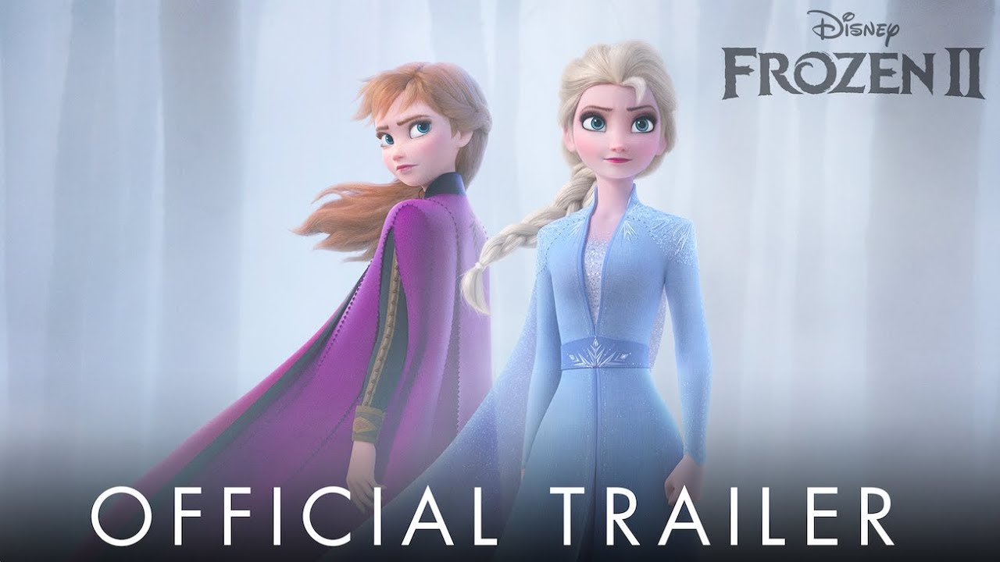
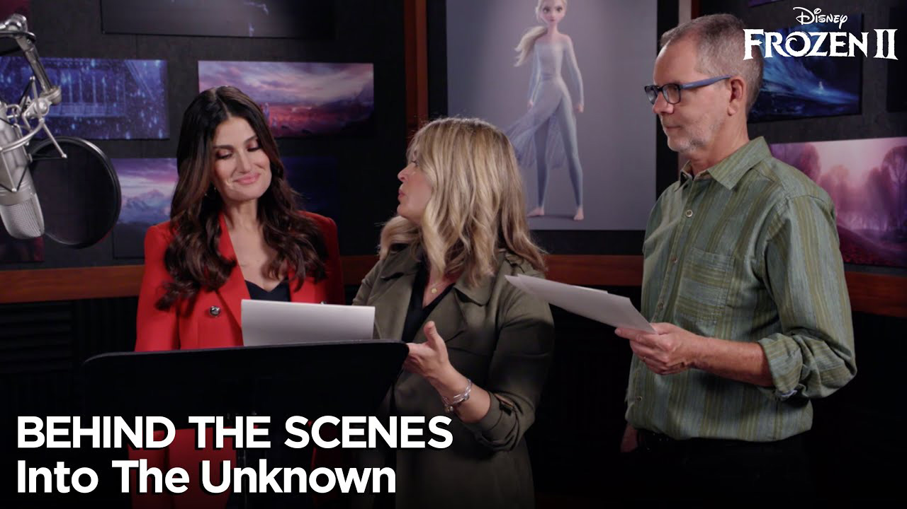

CONTENT
Official Trailer
Our main goal is for the audience to walk away from the film feeling like they visited Santa Cecilia and spent time in the Land of the Dead
-

- Frozen - Official US Trailer
- Why was Elsa born with magical powers? The answer is calling her and threatening her kingdom. Together with Anna, Kristoff, Olaf and Sven, she'll set out on a dangerous but remarkable journey. In “Frozen,” Elsa feared her powers were too much for the world. In “Frozen 2,” she must hope they are enough. From the Academy Award®-winning team—directors Jennifer Lee and Chris Buck, producer Peter Del Vecho and songwriters Kristen Anderson-Lopez and Robert Lopez—and featuring the voices of Idina Menzel, Kristen Bell, Jonathan Groff and Josh Gad, “Frozen 2” opens in U.S. theaters on Nov. 22, 2019.
-
- Frozen - Official US Trailer 2
- What truths about the past await Elsa as she ventures into the unknown to the enchanted forests and dark seas beyond Arendelle? The answers are calling her but also threatening her kingdom. Together with Anna, Kristoff, Olaf and Sven, she'll face a dangerous but remarkable journey. In “Frozen,” Elsa feared her powers were too much for the world. In “Frozen 2,” she must hope they are enough. From the Academy Award®-winning team—directors Jennifer Lee and Chris Buck, producer Peter Del Vecho and songwriters Kristen Anderson-Lopez and Robert Lopez—and featuring the voices of Idina Menzel, Kristen Bell, Jonathan Groff and Josh Gad, Walt Disney Animation Studios’ “Frozen 2” opens in U.S. theaters on Nov. 22, 2019.
-
- Frozen Official Teaser Trailer
- Watch the new teaser trailer from Disney's “Frozen 2.” From the Academy Award-winning team—directors Jennifer Lee and Chris Buck, and producer Peter Del Vecho—and featuring the voices of Idina Menzel, Kristen Bell, Jonathan Groff and Josh Gad, and the music of Oscar®-winning songwriters Kristen Anderson-Lopez and Robert Lopez, Walt Disney Animation Studios’ “Frozen 2” opens in U.S. theaters on Nov. 22, 2019.
-
- “Frozen - A Short Tale”
- Walt Disney Animation Studios, the studio behind "Tangled" and "Wreck-It Ralph," presents "Frozen," a stunning big-screen comedy adventure. Fearless optimist Anna (voice of Kristen Bell) sets off on an epic journey—teaming up with rugged mountain man Kristoff (voice of Jonathan Groff) and his loyal reindeer Sven—to find her sister Elsa (voice of Idina Menzel), whose icy powers have trapped the kingdom of Arendelle in eternal winter. Encountering Everest-like conditions, mystical trolls and a hilarious snowman named Olaf, Anna and Kristoff battle the elements in a race to save the kingdom.
Behind
-
- Frozen 2 Behind The Scenes On Set With Idina, Kristen, Josh & Jonathan
- Watch as Kristen Bell, Idina Menzel, Josh Gad and Jonathan Groff bring the characters they voice in Frozen 2 to life. Frozen Ⅱ, also known as Frozen 2, is a 2019 American 3D computer-animated musical fantasy film produced by Walt Disney Animation Studios. The 58th animated film produced by the studio, it is the sequel to the 2013 film Frozen and features the return of directors Chris Buck and Jennifer Lee, producer Peter Del Vecho, songwriters Kristen Anderson-Lopez and Robert Lopez, and composer Christopher Beck.
-

- Frozen 2 Behind the Scenes, Clips, Songs, Outtakes & Funny Bloopers (2019)
- Watch the official behind the scenes clip and bloopers compilation for Frozen 2, an animation movie starring Idina Menzel, Kristen Bell and Josh Gad. In theaters now. Anna, Elsa, Kristoff, Olaf and Sven leave Arendelle to travel to an ancient, autumn-bound forest of an enchanted land. They set out to find the origin of Elsa's powers in order to save their kingdom.
-
- Frozen 2 Behind The Scenes On Set With Idina, Kristen, Josh & Jonathan
- Watch as Kristen Bell, Idina Menzel, Josh Gad and Jonathan Groff bring the characters they voice in Frozen 2 to life. Frozen II, also known as Frozen 2, is a 2019 American 3D computer-animated musical fantasy film produced by Walt Disney Animation Studios. The 58th animated film produced by the studio, it is the sequel to the 2013 film Frozen and features the return of directors Chris Buck and Jennifer Lee, producer Peter Del Vecho, songwriters Kristen Anderson-Lopez and Robert Lopez, and composer Christopher Beck